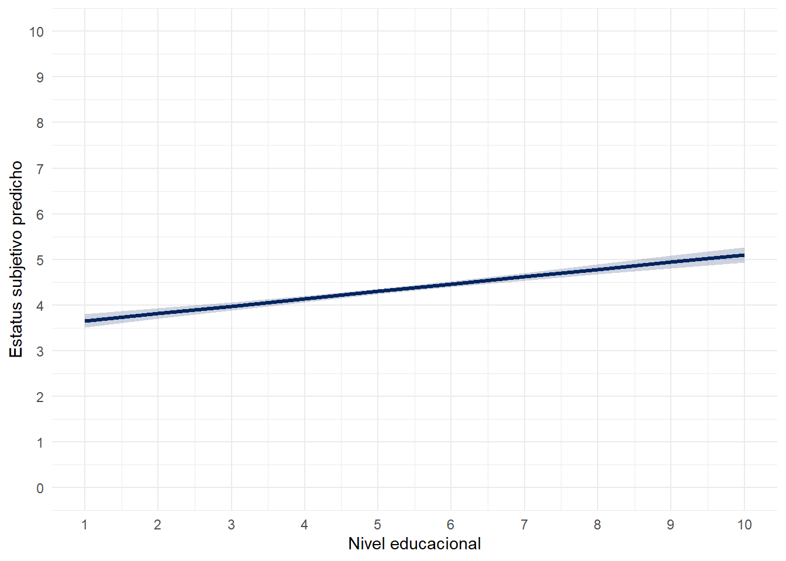
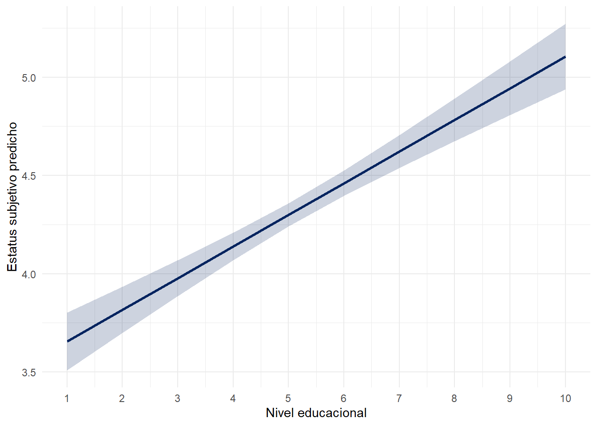
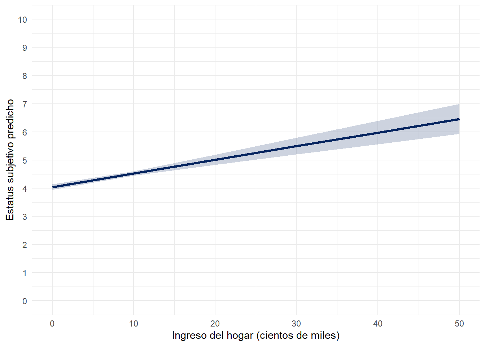

pacman::p_load(dplyr,
sjmisc,
sjPlot,
kableExtra,
summarytools,
ggeffects,
ggplot2)Práctico 06. Estimación de valores predichos
Métodos estadísticos para Ciencias Sociales III
1 Presentación
1.1 Objetivo de la práctica
Los prácticos anteriores se concentraron en estimar coeficientes, evaluar el ajuste y comparar la importancia relativa de los predictores. Esta guía trabaja el tercer objetivo del modelo de regresión: la predicción.
Al terminar, usted debería ser capaz de:
- Obtener el valor predicho de cada caso y relacionarlo con su residuo
- Calcular el valor esperado de la variable dependiente para perfiles hipotéticos
- Distinguir entre intervalo de confianza e intervalo de predicción
- Generar tablas y gráficos de valores predichos con la librería
ggeffects - Reconocer los límites de la predicción: extrapolación y escala de los ejes
1.2 Los datos
Seguimos con el estatus social subjetivo en ELSOC 2016 y el modelo que venimos utilizando desde el práctico 04.
2 Preparación
2.1 Librerías
rm(list = ls())
options(scipen = 999)
st_options(bootstrap.css = FALSE,
plain.ascii = FALSE,
style = "rmarkdown",
dfSummary.silent = TRUE,
footnote = NA,
subtitle.emphasis = FALSE)2.2 Carga y procesamiento
load(url("https://github.com/Kevin-carrasco/metod3-unab/raw/refs/heads/main/files/data/elsoc16-22.RData"))proc_data <- elsoc_long_2016_2022.2 %>%
filter(ola == 1) %>%
select(d01_01, m01, m29, m0_edad) %>%
set_na(., na = c(-999, -888, -777, -666)) %>%
rename("estatus" = d01_01,
"educacion" = m01,
"ingreso" = m29,
"edad" = m0_edad) %>%
na.omit() %>%
filter(ingreso >= 50000, ingreso <= 5000000) %>%
mutate(ing100 = ingreso / 100000) %>%
select(estatus, educacion, ing100, edad)
dim(proc_data)[1] 2301 42.3 Descriptivos
descr(proc_data,
stats = c("mean", "sd", "min", "med", "max", "n.valid"),
transpose = TRUE,
order = "preserve") %>%
kable(digits = 2) %>%
kable_styling(bootstrap_options = c("striped", "hover"),
full_width = FALSE)| Mean | Std.Dev | Min | Median | Max | N.Valid | |
|---|---|---|---|---|---|---|
| estatus | 4.33 | 1.53 | 0.0 | 5.0 | 10 | 2301 |
| educacion | 5.16 | 2.18 | 1.0 | 5.0 | 10 | 2301 |
| ing100 | 5.88 | 5.58 | 0.5 | 4.5 | 50 | 2301 |
| edad | 46.07 | 15.14 | 18.0 | 46.0 | 88 | 2301 |
2.4 El modelo
modelo <- lm(estatus ~ educacion + ing100 + edad, data = proc_data)tab_model(modelo,
show.se = TRUE,
show.ci = FALSE,
digits = 4,
p.style = "stars",
dv.labels = c("Estatus social subjetivo"),
pred.labels = c("(Intercepto)", "Nivel educacional",
"Ingreso (cientos de miles)", "Edad"),
string.pred = "Predictores",
string.est = "β")| Estatus social subjetivo | ||
|---|---|---|
| Predictores | β | std. Error |
| (Intercepto) | 2.9215 *** | 0.1465 |
| Nivel educacional | 0.1611 *** | 0.0165 |
| Ingreso (cientos de miles) | 0.0483 *** | 0.0061 |
| Edad | 0.0063 ** | 0.0021 |
| Observations | 2301 | |
| R2 / R2 adjusted | 0.113 / 0.111 | |
| * p<0.05 ** p<0.01 *** p<0.001 | ||
3 Valores predichos de cada caso
La función fitted.values() entrega el valor que el modelo estima para cada observación de la base:
proc_data$predicho <- fitted.values(modelo)
proc_data$residuo <- residuals(modelo)head(proc_data %>%
select(educacion, ing100, edad, estatus, predicho, residuo), 10) %>%
kable(digits = 2,
col.names = c("Educación", "Ingreso", "Edad",
"Observado", "Predicho", "Residuo")) %>%
kable_styling(bootstrap_options = c("striped", "hover"),
full_width = FALSE)| Educación | Ingreso | Edad | Observado | Predicho | Residuo |
|---|---|---|---|---|---|
| 2 | 3.0 | 64 | 5 | 3.79 | 1.21 |
| 4 | 5.0 | 60 | 5 | 4.18 | 0.82 |
| 5 | 5.0 | 54 | 6 | 4.31 | 1.69 |
| 5 | 3.5 | 38 | 4 | 4.13 | -0.13 |
| 5 | 7.0 | 34 | 6 | 4.28 | 1.72 |
| 9 | 8.0 | 53 | 7 | 5.09 | 1.91 |
| 9 | 7.0 | 55 | 6 | 5.05 | 0.95 |
| 4 | 7.0 | 42 | 5 | 4.17 | 0.83 |
| 5 | 7.0 | 28 | 6 | 4.24 | 1.76 |
| 7 | 4.0 | 28 | 6 | 4.42 | 1.58 |
Cada fila se lee así: las tres primeras columnas describen a la persona, la cuarta indica dónde declaró ubicarse en la escalera social, la quinta dónde el modelo esperaría encontrarla, y la sexta la distancia entre ambas.
3.1 Dos comprobaciones
sum(proc_data$residuo)[1] -0.0000000000001184833c(observado = mean(proc_data$estatus), predicho = mean(proc_data$predicho))observado predicho
4.325511 4.325511 La suma de los residuos es prácticamente cero y el promedio de los valores predichos coincide con el de la variable observada. Ambas son propiedades del método de mínimos cuadrados.
3.2 El rango de la predicción
summary(proc_data$estatus) Min. 1st Qu. Median Mean 3rd Qu. Max.
0.000 3.000 5.000 4.326 5.000 10.000 summary(proc_data$predicho) Min. 1st Qu. Median Mean 3rd Qu. Max.
3.377 3.985 4.209 4.326 4.565 7.294 Compare ambos resultados. Mientras el estatus observado recorre toda la escala de 0 a 10, los valores predichos se concentran en un tramo mucho más estrecho.
NotaQué significa esto
Un modelo con poco poder explicativo predice valores cercanos al promedio para casi todo el mundo. Es la expresión, en la escala de la variable, de lo que el \(R^2\) resume en un número.
4 Predicción para perfiles
La ecuación permite estimar el valor esperado para combinaciones de características que nos interesen, aunque no correspondan a ningún caso particular de la base.
4.1 Cálculo manual
Recordemos la ecuación:
coef(modelo)(Intercept) educacion ing100 edad
2.921529862 0.161068530 0.048334807 0.006267146 Para una persona de 30 años, con nivel educacional 8 y un ingreso del hogar de un millón de pesos (es decir, 10 en nuestra escala):
coef(modelo)[1] +
coef(modelo)[2] * 8 +
coef(modelo)[3] * 10 +
coef(modelo)[4] * 30(Intercept)
4.881441 4.2 Con predict()
NotaPredicción para nuevos casos
predict(modelo, newdata = datos_nuevos)
El objeto newdata debe contener todas las variables independientes del modelo, con exactamente los mismos nombres.
nuevo <- data.frame(educacion = 8, ing100 = 10, edad = 30)
predict(modelo, newdata = nuevo) 1
4.881441 El resultado coincide con el cálculo manual.
4.3 Comparando perfiles
perfiles <- data.frame(
educacion = c(3, 8, 3, 8),
ing100 = c(2.5, 10, 2.5, 10),
edad = c(30, 30, 60, 60)
)
perfiles$predicho <- predict(modelo, newdata = perfiles)kable(perfiles, digits = 2,
col.names = c("Educación", "Ingreso", "Edad", "Estatus predicho")) %>%
kable_styling(bootstrap_options = c("striped", "hover"),
full_width = FALSE)| Educación | Ingreso | Edad | Estatus predicho |
|---|---|---|---|
| 3 | 2.5 | 30 | 3.71 |
| 8 | 10.0 | 30 | 4.88 |
| 3 | 2.5 | 60 | 3.90 |
| 8 | 10.0 | 60 | 5.07 |
Cada fila describe un perfil hipotético. Comparando las filas 1 y 2 la diferencia proviene de la educación y el ingreso; comparando las filas 1 y 3, únicamente de la edad.
4.4 Dos tipos de intervalo
Toda predicción tiene incertidumbre, pero hay dos preguntas distintas que se pueden formular:
- Intervalo de confianza: ¿entre qué valores se ubica el estatus promedio de las personas con este perfil?
- Intervalo de predicción: ¿entre qué valores se ubica el estatus de una persona concreta con este perfil?
predict(modelo, newdata = nuevo, interval = "confidence") fit lwr upr
1 4.881441 4.777339 4.985542predict(modelo, newdata = nuevo, interval = "prediction") fit lwr upr
1 4.881441 2.05683 7.706051El segundo es mucho más amplio, porque además de la incertidumbre de la estimación incorpora la variabilidad individual. El promedio del grupo está bien estimado; una persona concreta, en cambio, puede ubicarse casi en cualquier punto de la escala.
5 Gráficos de valores predichos
5.1 La librería ggeffects
La función ggpredict() automatiza el procedimiento: hace variar el predictor de interés a lo largo de su rango y fija las demás variables en su promedio.
pred_educ <- ggpredict(modelo, terms = "educacion")
pred_educ# Predicted values of estatus
educacion | Predicted | 95% CI
------------------------------------
1 | 3.66 | [3.51, 3.80]
2 | 3.82 | [3.70, 3.93]
3 | 3.98 | [3.89, 4.07]
4 | 4.14 | [4.07, 4.21]
6 | 4.46 | [4.40, 4.53]
7 | 4.62 | [4.54, 4.71]
8 | 4.78 | [4.67, 4.89]
10 | 5.10 | [4.94, 5.27]
Adjusted for:
* ing100 = 5.88
* edad = 46.07Es la misma tabla de perfiles del apartado anterior, pero construida automáticamente y con sus intervalos de confianza.
5.2 El gráfico
ggplot(pred_educ, aes(x = x, y = predicted)) +
geom_line(color = "#04245f", linewidth = 1.2) +
geom_ribbon(aes(ymin = conf.low, ymax = conf.high),
alpha = 0.2, fill = "#04245f") +
scale_x_continuous(breaks = 1:10) +
scale_y_continuous(limits = c(0, 10), breaks = 0:10) +
labs(x = "Nivel educacional", y = "Estatus subjetivo predicho") +
theme_minimal()
La línea recorre los valores predichos y la banda representa el intervalo de confianza.
5.3 La importancia de los ejes
Comparemos el mismo gráfico con el eje vertical ajustado automáticamente:
ggplot(pred_educ, aes(x = x, y = predicted)) +
geom_line(color = "#04245f", linewidth = 1.2) +
geom_ribbon(aes(ymin = conf.low, ymax = conf.high),
alpha = 0.2, fill = "#04245f") +
scale_x_continuous(breaks = 1:10) +
labs(x = "Nivel educacional", y = "Estatus subjetivo predicho") +
theme_minimal()
AdvertenciaUna advertencia
Los datos, el modelo y los coeficientes son idénticos en ambos gráficos. Lo único que cambia es el eje vertical, y con ello la impresión que produce: en el segundo la pendiente parece pronunciada y el efecto mucho mayor de lo que es.
Al graficar valores predichos, use siempre la escala completa de la variable dependiente.
5.4 Otros predictores
ggpredict(modelo, terms = "ing100") %>%
ggplot(aes(x = x, y = predicted)) +
geom_line(color = "#04245f", linewidth = 1.2) +
geom_ribbon(aes(ymin = conf.low, ymax = conf.high),
alpha = 0.2, fill = "#04245f") +
scale_y_continuous(limits = c(0, 10), breaks = 0:10) +
labs(x = "Ingreso del hogar (cientos de miles)",
y = "Estatus subjetivo predicho") +
theme_minimal()
Note que la banda de confianza se ensancha hacia la derecha: hay pocos casos con ingresos muy altos, de modo que la predicción es menos precisa en ese tramo.
5.5 Especificar valores
También se puede pedir la predicción para valores determinados, indicándolos entre corchetes:
ggpredict(modelo, terms = "edad [20, 40, 60, 80]")# Predicted values of estatus
edad | Predicted | 95% CI
-------------------------------
20 | 4.16 | [4.04, 4.29]
40 | 4.29 | [4.22, 4.35]
60 | 4.41 | [4.33, 4.50]
80 | 4.54 | [4.39, 4.69]
Adjusted for:
* educacion = 5.16
* ing100 = 5.886 Los límites de la predicción
6.1 Extrapolación
La ecuación permite reemplazar cualquier valor, incluso uno que no existe en los datos:
fuera_de_rango <- data.frame(educacion = 8, ing100 = 200, edad = 150)
predict(modelo, newdata = fuera_de_rango) 1
14.81711 R entrega un resultado sin advertencia alguna. Pero el modelo fue estimado dentro de un rango determinado:
proc_data %>%
summarise(across(c(educacion, ing100, edad),
list(min = min, max = max))) %>%
round(2) %>%
kable() %>%
kable_styling(full_width = FALSE)| educacion_min | educacion_max | ing100_min | ing100_max | edad_min | edad_max |
|---|---|---|---|---|---|
| 1 | 10 | 0.5 | 50 | 18 | 88 |
ImportanteLa regla
No hay evidencia de que la relación estimada se mantenga fuera del rango observado de las variables. Los valores predichos solo son defendibles dentro de ese rango.
7 Ejercicios
Responda en un documento Quarto, incluyendo el código y sus respuestas.
7.1 Preparación
Cargue la base ELSOC y filtre por la ola 4 (2019). Seleccione las mismas variables de este práctico, recodifique los valores perdidos, aplique el criterio de limpieza al ingreso y exprese el ingreso en cientos de miles.
Estime el modelo con los tres predictores y presente la tabla de resultados.
7.2 Valores predichos y residuos
Calcule los valores predichos y los residuos. Presente una tabla con los diez primeros casos.
Compare el rango de la variable observada con el de los valores predichos, y comente qué muestra esa diferencia.
Identifique el caso con el residuo positivo más alto y describa sus características.
7.3 Predicción de perfiles
Calcule a mano, aplicando la ecuación, el estatus predicho para una persona de 45 años, con nivel educacional 5 e ingreso del hogar de 600 mil pesos. Verifique el resultado con
predict().Construya una tabla de cuatro perfiles que permita aislar el efecto del ingreso, es decir, manteniendo educación y edad constantes.
Obtenga el intervalo de confianza y el intervalo de predicción para el perfil del punto 6. Explique en una o dos oraciones por qué difieren.
7.4 Gráficos
Genere el gráfico de valores predichos para el ingreso, con el eje vertical en la escala completa de la variable dependiente.
Genere el mismo gráfico sin fijar el eje y comente qué diferencia produce en la interpretación visual.
Obtenga los valores predichos para los niveles educacionales 2, 5 y 9 utilizando la notación de corchetes.
7.5 Reporte
- Redacte un párrafo de máximo 250 palabras que reporte el modelo y utilice al menos dos valores predichos concretos para comunicar la magnitud del efecto del nivel educacional. Señale además una limitación de la predicción obtenida.